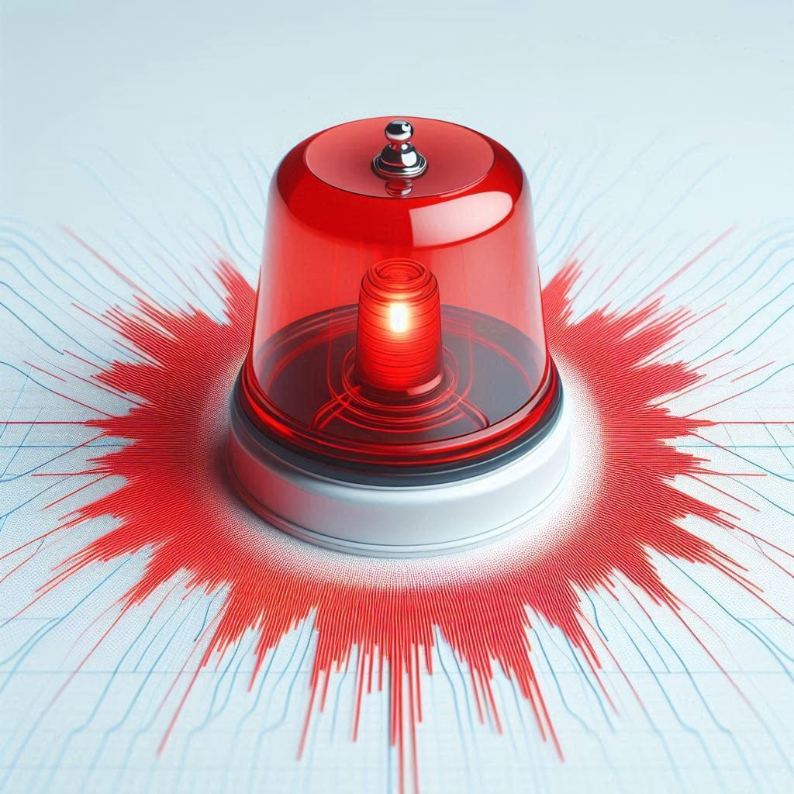
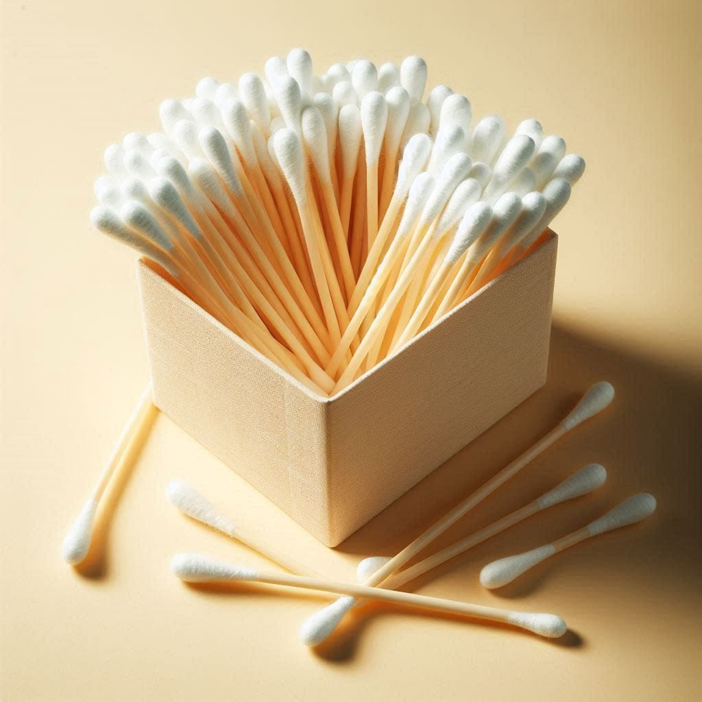

Veja 10 invenções que você não deve fazer ideia de como foram inventadas!
Toque de Celular

Quando falamos em toque de celular, automaticamente, pensamos em sons marcantes e muitas vezes até irritantes, pensando em alarmes, despertadores ou outro em um celular. Pra chegar ao que temos hoje, foi necessário muitos estudos e adaptações pensando nos usuários desse dispositivo digital. Se for falar históricamente, começou com algo bem trivial, feito durante a década de 80, pela Motorola lá nos "EUA" (Estados Unidos). Diferente de hoje, que podem ser personalizadas e com uma duração bem maior. Os primeiros toques, que eram mais conhecidos como bips, foram os primeiros a serem inseridos. A principal função dos "toques" de celular em si, tem como foco, transmitir de sons distintos, como uma chamada, assim despertar a atenção de quem usa o dispositivo. Entrando na década de 90, os toques de celular começaram a ser aprimorados, a base deles passou a ter então de melodias de música, assim chegando a algo próximo do que temos hoje, apesar de mais limitado na época. É bom também dizer que comparado aos dias atuais, os toques de celular que conhecemos, são chamados de polifônicos (várias notas de música ao mesmo tempo). Até os anos 90 eram monofônicos, onde se limitava a uso de uma só nota musical. Pode-se colocar também que alguns tipos de sons, como de notificações e de alertas, puderam ser implementados nesse mesmo contexto. No caso dos toques, eles serviram como uma pequena abertura pra essas outras 2 funções criadas. Por fim, a invenção dos toques de celular, foi feita pela Motorola, a qual foi a primeira que se popularizou, sendo assim, se tornou uma invenção muito importante para a sociedade atual.
Olho Mágico de Porta
Essa invenção cujo tamanho apesar de pequeno, foi uma invenção bem acima da média, mesmo não tendo destaque em geral. Desde que começou a se popularizar a implementação de portas, para aumentar a segurança, foi pensado em ver quem está do lado de fora de uma porta, começando então a ser pensado nessa diferente invenção. No início, havia sido descoberto, que para que o olho mágico fosse criado, ele teria que usar um tipo de lente capaz de criar uma imagem comprida em um pequeno espaço dentro de portas. O que pesou para essa invenção, é que o que era utilizado nesse espaço pequeno, não seria possível ter uma visão ampla, de quem estivesse do outro lado. Assim foi implementado essa lente, na qual se popularizou e conhecemos hoje com o termo "Olho Mágico". Ela foi desenvolvida e criada no início do século XX pelo americano Robert Williams Wood, na qual ele viu uma boa necessidade, colocar esse tipo de lente cujo objetivo e ampliar e dar uma visão maior de quem pode estar na parte de fora.
Band-Aid

O Band-Aid, é um curativo muito usado no dia a dia das pessoas, com objetivo de principalmente proteger, além de cicatrizar de feridas no corpo. Foi desenvolvida por um funcionário chamado Earle Dickson na década de 1920, ele trabalhava na Johnson & Johnson (EUA). O que era usado naquele período, não era especificamente usado para cortes e feridas, não acabava sendo uma maneira ideal de tratar esse tipo de problema. Quando ele criou, foi pelo improviso, pois ele tinha na época problemas relacionados que a esposa dele tinha por ela se ferir bastante. Ela costumava se acidentar muito onde moravam, e o que tinha não contribuía tanto para isso. Então ele teve a brilhante ideia de passar na ferida, um tipo de fita adesiva, a qual acabou-se dando super certo, assim se aprimorando e chegando ao que conhecemos e utilizamos atualmente.
Cabide

Uma invenção mais simples, mas que ainda é muito útil até os dias de hoje. O cabide não se sabe ao certo em qual ano foi inventado por ter sido criado outras formas diferentes apesar do uso parecido. A base mais próxima contingente aos dias atuais, foi feita por Albert J. Parkhouse. É relatado que em 1903, Albert J. Parkhouse estava indo para seu serviço, no dia estava usando um casaco, e ao chegar no lugar onde trabalhava, ele não encontrou ganchos para pendurar o casaco. Para esse problema, ele teve a grande ideia de pegar de um pedaço de arame e dobrá-lo ficando parecido com o que temos hoje, na qual usa de dois "ombros" e um gancho na parte superior. Há relatos desse utensílio para pendurar roupas por Thomas Jefferson, feito um pouco antes, mas ainda não tinha o design mais apropriado, visando como o de ParkHouse. Pode-se se dizer que ParkHouse, foi quem popularizou a nível de tornar-se popular e muito usado. É mais aceito que o "cabide" foi inventado nos Estados Unidos, apesar de já ter sido feito utensílios parecidos e próximos ao cabide em si.
Boneco de Posto
Apesar de ser uma invenção para lá de simples, o boneco de posto, foi uma invenção muito importante, onde foi pensado uma forma mais chamativa, amigável e maior para chamar a atenção dos motoristas em geral, pensando em encontrarem um posto para abastecer de seus veículos de forma mais descontraída e fácil para encontrar. Nessa invenção, não podemos colocar e atribuir a somente 1 pessoa, ele foi pensando e criado através do esforço de agências de publicidade e designers da empresa "Shell". Foi criado na década de 50 nos Estados Unidos.
Lixeira
Um objeto físico muito usado todos os dia pelas pessoas, muitas gente pode acabar enxergando como algo irrelevante e indigente comparado a outras invenções, mas tem a sua devida importância e utilidade na sociedade. Se for falar em um contexto geral, é mais apropriado dizer que não teve um país em específico que criou, teve a contribuição de diversos países. O surgimento para essa invenção veio a grande onda de proliferação de doenças, higiene e de alto acúmulo de lixo espalhado. Os lixos como conhecemos hoje, foram antes pequenos recepientes usados em picos de muito movimento populacional em cidades. Depois se tornando essencial para uso em todos lugares. Foi e continua sendo muito importante pra manter as cidades com uma aparência mais agradável, sustentável e higiênica para convívio. Teve como ponto de partida o século XIX os lixos de forma geral.
Sons de Sirenes
Quem nunca ouviu esses sons, não é mesmo?. Seu uso começou a ser usado para alertar sobre sinal de incêndio. Foi criado mais especificamente na França no fim do Século XIX. Até hoje é considerado a melhor forma para avisar e alertar sobre alguma situação de risco ou perigo.
Cotonete
O cotonete foi criado por Leo Gerstenzang no ano de 1923 nos Estados Unidos. Por muitos anos para limpar o ouvido, foram usados pequenos palitos de madeira. Apesar de útil para isso, causava desconforto principalmente pela ponta aguda do objeto. Até que certo dia na própria casa Leo Gerstenzang, pensou em uma forma mais segura para limpar, onde tinha uma filha pequena, para ajuda-lá, ele pegou uma haste de papel e juntou e enrolou com pontas de algodão. Com esse feito, tornou-se uma ferramenta muito usada no cotidiano.
Tipos de Emblemas
Para representar e simbolizar algo, temos o uso de emblemas. No caso dessa invenção, não é possível definir um ano e qual país criou necessariamente. Os emblemas existem já há muito tempo. São uma invenção que tem um valor histórico, pois através delas associamos e identificamos grupos, instituições e etc... Pode-se resumir que os emblemas seriam em si uma forma que guardamos na memória a todo momento, já que vemos emblemas todos os dias.
Barril

Esse objeto de madeira, foi desenvolvido em meados do século III A.C. Foi pensado e usado para transporte de mercadorias, na ocasião, não havia um suporte adequado para isso. Era mais usado naquele tempo o uso de "ânforas de cerâmica". O uso foi substituído pelo barril porque nessas ânforas, acabavam sendo muito pesadas além de bem frágeis. Os barris foram uma grande alternativa que passou-se a ser usada desde então.